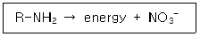

유기농업기사 (2008-07-27 기출문제)
1과목: 재배원론
1. 유전자 중심설에 대한 설명으로 틀린 것은?
- 작물발상의 중심지에는 재배식물의 변이가 가장풍부하다.
- 작물발상의 중심지에는 우성형질과 열성형질이 동일 비율로 존재한다.
- 작물발상의 중심지에는 원시적 형질을 가진 품종이 많다.
- 중심지에서 멀어질수록 열성유전자가 많다.
(정답률: 91%)

2. 다음 중 생력화 재배와 가장 관련이 적은 것은?
- 기계화 재배
- 다품종(多品種)재배
- 제초제의 이용
- 집단재배
(정답률: 40%)
3. T/R의 비율이 감소하는 경우는?
- 토양 수분이 부족한 곳에서 자란 식물
- 토양 통기가 불량한 곳에서 자란 식물
- 토양 양분이 풍부한 곳에서 자란 식물
- 파종기 또는 이식기가 늦어진 식물
(정답률: 알수없음)
4. 토양수분의 수주 높이가 1000㎝일 때 pF값과 기압은 각각 얼마인가?
- pF0, 0.001기압
- pF1, 0.01기압
- pF2, 0.1기압
- pF3, 1기압
(정답률: 알수없음)
5. SMS(soil moisture stress)를 가장 잘 설명한 것은?
- 내ㆍ외액의 농도차에 의해서 삼투를 일으키는 압력
- 삼투에 의해서 세포의 수분이 늘면 세포를 증대시키려는 압력
- 토양의 수분보유력 및 삼투압을 합친 것
- 삼투압과 막압을 합친 것
(정답률: 알수없음)
6. 다음 방사선의 종류 중 가장 현저한 생물적 효과를 가진 방사선은?
- α선
- β선
- γ선
- π선
(정답률: 알수없음)
7. 해충이 병원균을 매개하는 것은?
- 벼 줄기무늬잎마름병
- 보리 겉깜부기병
- 토마토 청고병
- 오이 흰가루병
(정답률: 50%)
8. 수분포텐셜에 대한 설명으로 틀린 것은?
- 용질의 농도가 높으면 수분포텐셜이 감소한다.
- 압력이 높아지면 수분포텐셜이 감소한다.
- 온도가 높아지면 수분포텐셜이 증대한다.
- 수분포텐셜이 높은 곳에서 낮은 곳으로 물이 이동한다.
(정답률: 59%)
9. 보통 밀의 단백질에 면역된 혈청에 나타난 침강 반응을 관찰하기 위한 가장 적합한 단백질 용액 희석도는?
- 1:34
- 1:32.5
- 1:25
- 1:10
(정답률: 알수없음)
10. 다음 중 산성토양에 가장 약한 작물들로만 짝 지어진 것은?
- 벼, 호밀
- 땅콩, 콩
- 보리, 귀리
- 콩, 양파
(정답률: 알수없음)
11. 수발아(穗發牙)에 대한 설명으로 틀린 것은?
- 우리나라에서는 보리가 밀보다 성숙기 빠르므로 수발아의 위험이 적다.
- 벼에서 수발아가 문제가 되는 겨우도 있다.
- 밀에서는 초자질립, 백립종 등이 수발아가 심한 경향이 있다.
- 맥류에서 출수 후 40일경 종피가 굳어진 후에 발아억제제를 살포하면 수발아가 억제 된다.
(정답률: 알수없음)
12. 일반적으로 답전윤황에서 논 기간과 밭 기간은 각각 몇 년 정도로 하는 것이 적합한가?
- 1년
- 2~3년
- 4~5년
- 6~7년
(정답률: 알수없음)
13. 유축농업(有畜農業) 또는 혼합농업과 비슷한 뜻이며, 식량과 사료를 서로 균형있게 생산하는 재배형식은?
- 식경(殖耕)
- 원경(園耕)
- 소경(疎耕)
- 포경(圃耕)
(정답률: 알수없음)
14. 풍해의 기계적 장해에 해당 되는 것은?
- 벼에서 수분 및 수정이 저해되어 불임립(不稔粒)이 발생한다.
- 상처가 나면 호흡이 증대되어 체내의 양분 소모가 증대 된다.
- 증산이 커져서 식물이 건조해진다.
- 기공이 닫혀 광합성이 감소한다.
(정답률: 알수없음)
15. 내건성이 강한 작물의 특성 설명으로 옳은 것은?
- 세포가 크다.
- 세포액의 삼투포텐셜이 높다.
- 세포막의 수분투과성이 크다.
- 세포의 원형질 함량이 적다.
(정답률: 알수없음)
16. 잡초 종자의 발아에 대한 설명으로 옳은 것은?
- 잡초 종자는 대개 수명이 짧다.
- 잡초 종자는 대개 협광성이다.
- 잡초 종자는 대개 변온에서 발아율이 낮아진다.
- 잡초 종자는 대개 복토가 얕으면 잘 발아한다.
(정답률: 알수없음)
17. 질소농다가 0.2%인 수용액 20L를 만들어서 엽면시비를 하려 할 때 필요한 요소비료의 양은? (단, 요소비료의 질소함량은 46% 이다.)
- 약 3.96g
- 약 8.70g
- 약 40.0g
- 약 86.96g
(정답률: 알수없음)
18. 식물체 줄기의 정아우세 현상을 발현하는 식물 호르몬은?
- Auxin
- Gibberellin
- Cytokinin
- Abscissic Acid
(정답률: 알수없음)
19. 토양구조에 관한 설명으로 옳은 것은?
- 식물이 가장 잘 자라는 구조는 이상구조이다.
- 단립(單粒)구조는 점토질 토양에서 많이 볼 수 있다.
- 수분과 양분의 보유력이 가장 큰 구조는 입단구조이다.
- 이상구조는 대공극이 암고 소공극이 적다.
(정답률: 80%)
20. 내식성(耐蝕性) 작물에 해당되는 것은?
- 옥수수
- 담배
- 알팔파
- 목화
(정답률: 67%)
2과목: 토양비옥도 및 관리
21. 경지정리지구에서는 절토지와 성토지가 생긴다. 다음 중 성토지의 경토 성분이 절토지의 경토 성분보다 낮은 것은?
- 전질소
- 치환성식회
- 유효규산
- 고토성분
(정답률: 알수없음)
22. 화성암이며, 우리나라 토양의 주요 모재가 되는 암석은?
- 화강암
- 천매암
- 석회암
- 현무암
(정답률: 72%)
23. 강우시 강우량이 침투량(Infiltration)보다 많은 때 발생하는 현상으로만 연결된 것은?
- 침투(Infiltration), 유거(Runoff)
- 침투(Infiltration), 증발(Evaporation)
- 모세관 상승(Capillary Rise), 유거(Runoff)
- 유거(Runoff), 침식(Erosion)
(정답률: 알수없음)
24. 화성암 중 중성암으로만 짝지어진 것은?
- 석영반암, 휘록암
- 안산암, 섬록암
- 현무암, 반려암
- 화강암, 섬록반암
(정답률: 알수없음)
25. 토양생성에 관여하는 5가지 요인이 모두 올바르게 배열된 것은?
- 모재, 부식, 기후, 수분, 지형
- 모재, 지형, 식생, 부식, 기후
- 모재, 기후, 시간, 지형, 부식
- 모재, 지형, 기후, 식생, 시간
(정답률: 알수없음)
26. 부식의 기능에 대한 설명으로 틀린 것은?
- 물을 보유하는 힘을 높여 준다.
- 중금속의 피해를 감소시킨다.
- 토양구조의 분산(分散)을 증가시킨다.
- 토양의 입단구조를 조장한다.
(정답률: 70%)
27. 토양의 전 용적밀도(bulk density)가 1.8g/cm3 일 때 75cm3 용적에 들어 있는 건조토양의 질량은?
- 135g
- 42g
- 36g
- 0.024g
(정답률: 알수없음)
28. 식물체 구성 성분 중 부식을 형성하는 주체로만 짝지어진 것은?
- 셀롤로오스와 왁스류
- 아미노산과 셀롤로오스
- 셀롤로오스와 단백질
- 리그닌과 단백질
(정답률: 알수없음)
29. 심층토의 색이 갈색이거나 붉은 색을 띠는 이유로 옳은 것은?
- 알루미늄 산화물(Al-oxide)의 집적
- 석영(Quartz)의 집적
- 유기물(Organic matter)의 집적
- 철 산화물(Fe-oxide)의 집적
(정답률: 알수없음)
30. 토양의 용적밀도가 1.3g/cm3 이고, 입자밀도가 2.6g/ cm3 인 경우의 토양공극률은?
- 13%
- 25%
- 50%
- 75%
(정답률: 알수없음)
31. 다음의 식이 나타내는 현상은?

- 불용화(Immobilization)
- 가용화(Mobilization)
- 용해(Dissolution)
- 합성(Synthesis)
(정답률: 알수없음)
32. 형태론적 토양분류체계에서 주로 화산분출에 의해 형성된 화산회토양을 의미하는 토양목은?
- Andisol
- Aridisol
- Oxisol
- Histosol
(정답률: 알수없음)
33. 토양조사에 있어서 매우 중요한 일의 하나가 토양단면의 형태조사이다. 단면을 만들 때 고려해야할 사 항으로 옳은 것은?
- 시갱(pit)을 하는데 깊이는 일반적으로 100㎝를 기준으로 한다.
- 시갱을 하기 힘든 곳에서 기준의 자연적 단면 또는 도로를 만들 때 들어난 단면을 이용하여 조사해서는 안 된다.
- 토양생성인자를 고려하여 될 수 있는 한 대표적 인 장소를 선정하여 시갱한다.
- 시갱할 때 지하수위가 높아 물이 고이는 곳은 수면위로 들어난 곳만 조사한다.
(정답률: 알수없음)
34. 논토양에서 NH4+ 형태의 질소에 비하여 NO3-형태의 질소의 이용 효율이 낮은 이유로 옳은 것은?
- NO3-형태의 질소는 토양에 강하게 흡착되어 이 용되기 어렵기 때문이다.
- NO3-형태의 질소는 탈질작용을 통하여 손실되기 때문이다.
- NO3- 형태의 질소는 금속성 음이욘과 쉽게 결합하여 침전되기 때문이다.
- 미생물은 NO3- 형태의 질소를 우선적으로 흡수 하여 부동화시키기 때문이다.
(정답률: 알수없음)
35. 토양 내 수분이동에 관한 일반적인 설명으로 틀린 것은?
- 토양수분의 이동방향을 결정하는 곳은 두 지점간 수분포텐셜 구배이다.
- 지표에 고운 흙을 뿌리는 수분 보전방법은 일종 의 모세관 절단효과이다.
- 일반적으로 진흙에서 모래로 수분이 이동할 때 이동속도는 빨라진다.
- 토양 내 물의 이동은 포화상태의 흐름과 불포화 상태의 흐름으로 나뉘는데 수분장력의 차에 따른 물의 이동은 불포화 상태의 흐름이다.
(정답률: 알수없음)
36. 산성토양의 개량방법으로 적합하지 않은 것은?
- 농용석회 시용
- 황산석회 시용
- 완숙 유기물의 시용
- 패각분말 시용
(정답률: 64%)
37. 점토(clay)의 설명으로 틀린 것은?
- 비표면적이 크다.
- 2차 광물이다.
- 가소성과가 점착력이 크다.
- 모관력은 매우 약하다.
(정답률: 알수없음)
38. 토양수분의 토양수분장력(pF) 크기 순서로 옳은 것은?
- 흡습수 ＞ 중력수 ＞ 모관수
- 중력수 ＞ 모관수 ＞ 흡습수
- 흡습수 ＞ 모관수 ＞ 중력수
- 모관수 ＞ 중력수 ＞ 흡습수
(정답률: 알수없음)
39. 객토에 대한 설명으로 틀린 것은?
- 점토 햠량이 높은 객토원을 낮은 대상지에 넣고 토성을 조절하는 작업이다.
- 객토는 객토원의 두께가 10㎝ 이하의 것으로 원 토양과 섞어야 한다.
- 객토를 하기 위한 객토원을 찾기 위해서 정밀토양도를 찾는 것은 불필요하다.
- 객토는 시설토양의 염류 희석, 고랭지 토양, 오염지 토양, 연작장해지 등에 효과가 있다.
(정답률: 알수없음)
40. 알칼리 토양에서 용해도가 증가하는 영양소끼리 짝지어진 것은?
- S, Cu
- Cu, Co
- Co, Mo
- Mo, S
(정답률: 알수없음)
3과목: 유기농업개론
41. 병해 친환경방제의 첫걸음은 사전 예방이며 예방을 하려면 발병조건을 알아야 한다. 벼잎집무늬마름병의 발병요인 및 예방적 방제법으로 적절하지 않은 것은?
- 써레질 직후 수면에 떠 있는 균핵을 제거하는 것은 방제에 도움이 된다.
- 논 주변의 잡초는 잎집무늬마름병의 발생과 큰 관련이 없다.
- 벼의 초관에 통풍이 잘 되도록 하는 조치는 병 방제에 도움이 된다.
- 질소 과용을 피한다.
(정답률: 알수없음)
42. 유기종자의 구비조건으로 거리가 먼 것은?
- 병해충 저항성이 강한 품종
- 적어도 1세대를 유기농법적으로 재배한 작물로부터 채종된 종자
- 고수량성 종자
- 화학적 소독을 거치지 않은 종자
(정답률: 알수없음)
43. 시설재배 시에 발생하는 연작장해의 설명으로 틀린 것은?
- 시설의 이용률을 높이기 위하여 같은 작물을 반복해서 재배할 때 발생한다.
- 특정 병원 미생물이나 해충의 밀도가 높아지면 병충해 피해가 커진다.
- 특정양분이 지속적으로 흡수 이용되기 때문에 양분결핍 장해가 나타나고, 미량 요소는 풍부한 반면 다량요소의 결핍이 자주 나타난다.
- 연작장해를 예방하기 위해 합리적인 작부체계를 도입하고, 병충해를 철저히 예방하여야 한다.
(정답률: 알수없음)
44. 미생물 농약의 장점으로 거리가 먼 것은?
- 환경에 대해 안전하다.
- 효과가 서서히 나타나는 경우가 많다.
- 병충해가 내성을 가지기 어렵다.
- 인축에 해가 적다.
(정답률: 알수없음)
45. 유기농업발전기획단의 설치 년도는?
- 1991년
- 1992년
- 1993년
- 1994년
(정답률: 알수없음)
46. 태양열을 이용한 하우스 밀폐처리로는 방제효과를 얻기 어려운 병해충은?
- 상추 시들음병
- 토마토 갈색뿌리썩음병
- 토양 선충
- 토마토 모자이크병
(정답률: 50%)
47. 다음 중 타감작용이 가장 큰 작물은?
- 벼
- 옥수수
- 호밀
- 수수
(정답률: 알수없음)
48. 유기농업에서 토양 양분 보존을 이룰 수 있는 작부체계기술로 볼 수 없는 것은?
- 초기생육이 왕성한 피복작물을 재배하거나 수확 후 작물 잔재를 남겨 토양을 나지상태로 두는 것을 최대한 피한다.
- 짚 등의 부산물을 농장 밖으로 팔거나 내보내지 않고 그루터기와 함께 로타리 작업을 하거나 가축깔개로 사용한 후 퇴비화하여 토양에 환원시킨다.
- 두과작물과 다비성 작물을 교대로 윤작체계에 배치함으로써 후작물의 질소요구량을 자연적으로 충족시켜 주도록 한다.
- 볏짚 등의 부산물도 소득 증대를 위해 판매하여 현금화 하고, 토양에는 N, P, K 위주의 화학비료를 충분히 공급해 준다.
(정답률: 알수없음)
49. 토양의 물리성 개량에 따른 효과로써 적합하지 않는 것은?
- 포장이 홑알조직으로 굳어져 토양병해충 방제가 왕성해 진다.
- 공극율이 높아져 산소와 물의 유통이 촉진된다.
- 포장의 보수력이 높아져 작물생육이 왕성해진다.
- 포장의 토심이 깊어져 뿌리발육이 왕성해진다.
(정답률: 알수없음)
50. 과실의 조직 및 구조의 특성 상 석회보르도액을 사용하기 가장 어려운 작물은?
- 사과
- 배
- 딸기
- 보리
(정답률: 알수없음)
51. 유기농업에서 이용할 수 있는 무농약 토양소독법과 가장 거리가 먼 것은?
- 증기 이용법
- 소토법
- 태양열 소독법
- 살균제 처리
(정답률: 알수없음)
52. 작부체계를 다양화하기 위한 환경친화형 벼 품종 개발 목표로 가장 적절한 것은?
- 수량과 소득증대
- 저항성 품종개발
- 내병성과 스트레스에 강한 품종
- 단기 생육성 품종개발
(정답률: 알수없음)
53. 유기배합 사료 중 단미사료가 아닌 것은?
- 옥수수
- 산야초
- 어분
- 아민초산
(정답률: 34%)
54. 병해충 방어막으로서의 다양한 생태계 창출을 위한 대안으로 틀린 것은?
- 윤작체계를 확립함으로써 단작체계하에서 재배 되는 작물보다 병해충 피해를 줄일 수 있다.
- 주작물의 사이사이에 다른 종류의 간작물을 실시하면 그곳이 천적의 서식공간으로 활용되어 병해충제에 기여한다.
- 익충들이 특히 좋아하는 유인작물을 경작지 둘레에 울타리같이 재배하여 생태계의 섬을 만들어 줌으로써 병해충제어 효과를 높인다.
- 경작지 내외의 잡초를 깨끗하게 제거하기 위하 여 제초제를 살포함으로써 병균이나 해충의 서식처를 원천적으로 봉쇄해 버리는 것이 좋다.
(정답률: 알수없음)
55. 친환경농업의 목적으로 가장 거리가 먼 것은?
- 지속적 농업발전
- 안전농산물 생산
- 저렴한 농산물의 대량생산
- 환경보전적 농업발전
(정답률: 알수없음)
56. 다음 중 예방적 병충해 방제와 거리가 먼 것은?
- 병충해 발생환경의 차단
- 천적자원의 보호증식
- 방제용 물질의 이용
- 내병충성 품종의 재배
(정답률: 알수없음)
57. 제초제를 사용하지 않는 친환경 잡초방제를 할 경우 다음 중 어떤 품종의 벼를 선택하는 것이 잡초 발생 억제에 도움이 되겠는가?
- 재래종
- 추청벼
- 일품벼
- 통일벼
(정답률: 34%)
58. 친환경 재배를 위한 녹비작물 선택시 고려해야 할 주요 사항이 아닌 것은?
- 입모중 파종의 가능 여부
- 주작물과 경합시 녹비작물의 생육기간이 충분한 지 여부
- 완전경운 파종에 적응 여부
- 지상부 생장속도가 빠르고 지하부 생장량이 많은지 여부
(정답률: 알수없음)
59. 다음 중 양질의 퇴비를 판정하는 주요한 방법으로 거리가 먼 것은?
- 관능적 방법
- 발아시험법
- 탄질율 검사
- 물리학적 방법
(정답률: 알수없음)
60. 유기벼 인증을 받기 위한 농가가 행할 재배방법으로 틀린 것은?
- 농약 살포가 필요 없을 정도로 충해에 강한 내충성 GMO 품종을 선택한다.
- 외부투입 물자를 최소화 하여 농업생태계를 보호한다.
- 유기농업으로 재배 ㆍ 생산된 종자를 사용한다.
- 두과작물, 녹비작물을 재배하여 토양유기물을 증대시킨다.
(정답률: 알수없음)
4과목: 유기식품 가공.유통론
61. 샐러드 오일 제조시 고융점 유지인 스테아린을 제거하기 위해 사용하는 공정은?
- 탈납(dewaxing)
- 동유처리(winterization)
- 용매분별(solvent fractionation)
- 경화처리(hydrogenation)
(정답률: 알수없음)
62. 식용유지류 제품은 트랜스지방이 100g당 얼마 미만 일 경우 “0”으로 표시할 수 있는가?
- 1g
- 2g
- 4g
- 8g
(정답률: 90%)
63. 발효식품 제조를 위한 코오지(koji) 곰팡이는 어느 효소들의 역가가 가장 좋아야 하는가?
- lactase, lipase
- proteinase, pectinase
- glycosedase, nuclease
- amylase, protease
(정답률: 30%)
64. 무균충전 시스템과의 조합으로 상온 저장 ㆍ 유통이 가능하며, 고추장, 된장, 과일, 어육소시지, 어묵 등의 가공과 냉동식품의 해동에 응용이 가능한 살균 방법은?
- 전기저항가열법
- 적외선조사법
- 고온살균법
- 한외여과법
(정답률: 알수없음)
65. 산지시장의 기능과 거리가 먼 것은?
- 물적유통 기능
- 상적유통 기능
- 유통조성 기능
- 소매유통 기능
(정답률: 알수없음)
66. MA 포장방법에 대한 설명 중 틀린 것은?
- 피포장물을 플라스틱 필름이나 피막제로 코팅한다.
- 초장지 내부의 가스조성이 저산소, 고탄산가스 농도로 변화된다.
- 호흡작용, 증산작용은 억제되나 에틸렌 생성은 촉진된다.
- 과습으로 인한 부패나 산소부족에 따른 호흡장 해가 발생할 수 있다.
(정답률: 알수없음)
67. 유기가공식품에 대한 설명으로 옳은 것은?
- 식품위생법 제2조 중'식품'의 정의에 의한 식품 이다.
- 유기농업과 유기가공식품 관련 기준은 나라마다 모두 동일하다.
- 유기가공식품 원료는 관행농업으로 생산한다.
- 유기가공식품에 사용할 수 있는 식품첨가물은 따로 정해져 있다.
(정답률: 알수없음)
68. 대장균군 검사에 사용되지 않는 배지는?
- 표준한천배지
- 유당배지
- BGLB 배지
- 데스옥시콜레이트 유당한천 배지
(정답률: 19%)
69. 유기가공식품 생산 및 취급시 발효채소제품에 사용 이 가능한 식품첨가물은?
- 알긴산
- 젖산
- 주석산나트륨
- 수산화나트륨
(정답률: 알수없음)
70. 과일 A의 가격이 상승했을 때 과일 B의 수요가 증가하는 경우, 과일 A와 B는 어떤 관계인가?
- 배척관계
- 결합관계
- 보합관계
- 대체관계
(정답률: 알수없음)
71. 식품공전상의 장류 품질규격으로 틀린 것은?
- 대장균군 : 음성[(혼합장(살균제품)에 한한다.]
- 타르색소 : 검출되어서는 아니 된다.
- 아플라톡신 : 10㎍/㎏이하(B1으로서 메주에 한한다.)
- 보존료 : 검출되어서는 아니 된다.
(정답률: 알수없음)
72. 과일잼의 젤리화에 알맞은 pH는?
- pH 1
- pH 3
- pH 5
- pH 7
(정답률: 알수없음)
73. 과실류의 냉장저장 조건을 확립하려고 할 때 필요한 정보와 거리가 먼 것은?
- 과실의 초기 온도
- 과실의 비열
- 과실의 수분활성도
- 과실의 호흡율
(정답률: 알수없음)
74. 마케팅의 개념 유형 중 소비자의 건강과 환경문제에 대한 관심을 반영한 것은?
- 생산지향 개념
- 사회지향 개념
- 제품지향 개념
- 마케팅 지향 개념
(정답률: 알수없음)
75. 포장재료를 선정하기 위해 고려할 사항으로 틀린 것은?
- 수분함량이 많은 식품의 포장에는 내수성이 있는 재료를 선택한다.
- 가열살균을 하는 제품의 경우 고온에서도 포장재료의 특성 변화가 적은 것을 선택한다.
- 지방을 많이 함유하는 식품은 기체투과도가 높은 재료를 선택한다.
- 냉동식품은 저온에서도 재료의 물리적 강도변화 가장 적은 재료를 선택한다.
(정답률: 84%)
76. 화농성 질환의 병원균으로 독소형 식중독의 원인균은?
- Leuconostoc mesenterodes
- Streptococcus faecalis
- Staphylococcus aureus
- Bacillus coagulans
(정답률: 알수없음)
77. 세균의 generation time이 30분ㅇ일 때 초기세균수 103개가 109개로 되는데 걸리는 시간은? (단, log2는 0.3으로 계산한다.)
- 10시간
- 20시간
- 25시간
- 40시간
(정답률: 알수없음)
78. 식물성 자연독 성분을 함유한 식품이 잘못 연결된 것은?
- gossypol - 정제가 불충분한 목화씨 기름
- solanine - 감자의 배당체
- cicutoxin - 독미나리
- lycorin - 미국자리공
(정답률: 알수없음)
79. 유기가공식품의 제조ㆍ가공기준으로 틀린 것은?
- 기계적, 물리적, 생물적 제조ㆍ가공방법을 사용 하여야 하고, 식품첨가물을 최소량 사용하여야 한다.
- 유기가공실품과 비유기가공식품을 동일한 시간 동일한 설비로 제조ㆍ가공한다.
- 유기가공식품과 원료유기농산물은 비유기가공식 품 및 비유기원료농산물과 따로 보관ㆍ저장하여야 한다.
- 방사선 조사처리된 원재료를 사용하여서는 아니 된다.
(정답률: 알수없음)
80. 고구마를 따뜻하고 습기가 많은 방에 두어 상처를 아물게 하는 방법은?
- 가온저장
- Curing 저장
- CA저장
- 습윤저장
(정답률: 알수없음)
5과목: 유기농업관련 규정
81. 친환경농업육성법에 의한 친환경농업발전위원회 위원의 임기는?
- 1년
- 2년
- 3년
- 5년
(정답률: 알수없음)
82. 식품의약품안전청장이 고시한 식품 등의 표시기준에 서 규정하고 있는 유기가공식품 생산에 사용한 식품첨가물(보조제 포함)이 아닌 것은?
- 이산화탄소
- 알긴산
- 환천
- 발효주정
(정답률: 알수없음)
83. 식품의약품안전청장이 고시한 식품 등의 표시기준 에 따라 유기가공식품 생산 및 취급시 사용이 가능한 재료 중 염류의 식품가공에 일반적으로 사용되는 기본 성분으로 가장 적합한 것은?
- 염화칼륨뿐이다.
- 염화칼륨, 염화나트륨뿐이다.
- 염화칼륨, 염화나트륨, 염화마그네슘뿐이다.
- 염화칼륨, 염화나트륨, 염화마그네슘, 황산칼슘 등이다.
(정답률: 알수없음)
84. 유기식품의 생산ㆍ가공ㆍ표시ㆍ유통에 관한 codex 가이드라인에서 사용되는 용어의 설명으로 옳은 것은?
- “관할기관”이란 권한을 갖는 공식 인증기관이다.
- “농산물/농산물계 제품”은 인간의 섭취 또는 동물 사료용으로 판매되는 모든 가공품을 말한다.
- “표시”는 손으로 쓴 것은 인정되지 않으며 인쇄나 그림으로 나타낸 라벨이다.
- “식물보호제”란 식품, 농산물, 사료를 보호, 저장, 운송, 유통, 가공할 때 원하지 않는 동식물, 병해충을 예방, 파괴, 유인, 퇴치, 억제하는데 사용하는 물질을 말한다.
(정답률: 알수없음)
85. 유기축산물 생산을 위한 유기배합사료 제조용 자재 중 보조 사료가 아닌 것은?
- 벤토나이트
- 아밀라제
- 비소
- 해초추출물
(정답률: 알수없음)
86. 친환경농업육성법 시행규칙에 따른 유기농림산물 인증 기준으로 틀린 것은?
- 화학비료와 유기합성농약을 일체 사용하지 아니 하여야 한다.
- 다년생 작물의 재배포장은 최초 수확 전 2년 이상 유기농림산물 인증기준의 재배방법으로 재배 된 포장이어야 한다.
- 유기사료 기주에 맞지 않는 사료를 먹인 농장 에서 유래된 퇴비도 조건이 부합하는 경우 사용 할 수 있다.
- 해충방제, 식품보존, 위생의 목적으로 방사선을 사용할 수 없다.
(정답률: 알수없음)
87. 친환경농업육성법에서 규정한 친환경농산물 인증의 부정행위로 볼 수 없는 것은?
- 거짓 그 밖의 부정한 방법으로 친환경농산물 인증을 받는 행위
- 인증품에 인증품이 아닌 농산물을 혼합하여 판매하거나 판매할 목적으로 보간, 운반 또는 진열하는 행위
- 친환경농산물표시를 한 상품이 인증품이 아닌 농산물임을 모르고 판매하는 행위
- 인증품이 아닌 농산물에 친환경농산물 표시 또는 이와 유사한 표시를 하는 행위
(정답률: 알수없음)
88. 유기식품의 생산ㆍ가공ㆍ표시ㆍ유통에 관한 codex 가이드라인에서 규정한 용어의 정의 중 유전자조작 유기물에 포함되는 '유전자조작/변형기법'에 해당되지 않는 것은?
- 형질도입
- 세포융합
- 유전자 제거/배가
- 캡슐화
(정답률: 알수없음)
89. 친환경농업육성법상 농업환경의 실태조사 및 친환경 농산물 시판품 조사행위를 거부ㆍ방해 또는 기피할 경우에는 얼마이하의 과태료를 부과할 수 있는가?
- 100만원
- 300만원
- 500만원
- 1000만원
(정답률: 알수없음)
90. 유기식품의 생산ㆍ가공ㆍ표시ㆍ유통에 관한 codex 가이드라인에 따라 식품의 조제나 보존시 첨가제나 가공보조제로 사용되는 경우가 아닌 것은?
- 자연에 존재해야 하나 기계적/물리적 처리를 거칠 수 있다.
- 허가된 방법과 기술로 충분한 양을 구할 수 없을 때는 예외적으로 화학적으로 합성된 물질을 허용물질에 포함시킬 수 있다.
- 자연에 존재해야 하나 생물/효소나 미생물 처리를 거칠 수 있다.
- 해당 물질이 식품을 조제하는데 효과적이어야 한다.
(정답률: 알수없음)
91. 유기식품의 생산ㆍ가공ㆍ표시ㆍ유통에 관한 codex 가이드라인에서 검사/인증시의 최소 검사요건 및 예방조치로 가장 적합한 것은?
- 수입국은 수입 유기제품의 검사요건만 정해 놓으면 된다.
- 인증기관은 필요에 따라 또는 불시에 생산구역 을 방문해야 한다.
- 인증기관은 최소한 2년에 한번씩 생산구역 전체 에 대해 물리적인 검사를 실시해야 한다.
- 사업자는 매년 인증기관이 정한 날짜에 인증기관에 단위농지별로 작물생산 스케줄을 통보한다.
(정답률: 알수없음)
92. 친환경농업육성법 시행규칙에 의한 유기농림산물의 인증기준에서 재배방법의 구비조건 중 병해충 및 잡초의 방제ㆍ조절 방법으로 거리가 먼 것은?
- 적합한 윤작체계
- 덫과 같은 기계적 통제
- 동물의 방사
- 무경운
(정답률: 알수없음)
93. 유기식품의 생산ㆍ가공ㆍ표시ㆍ유통에 관한 codex 가이드라인에서 유기생산의 원칙 중 양봉 및 꿀벌 제품의 병해충 관리를 위해 어용되지 않는 것은?
- 포름산
- 유황
- 증기와 직사 화염
- 순수 니코틴
(정답률: 알수없음)
94. 유기식품의 생산ㆍ가공ㆍ표시ㆍ유통에 관한 codex 가이드라인의 규정이다. 유기농장에서 동물약품을 사용할 때 원칙과 거리가 먼 것은?
- 특정질병이나 건강문제가 발생하고 있거나 발생 할 수 있는 장소에서 다른 치료 방법이나 처리방법이 없거나 법으로 요구될 때는 예방접종이나 구충제ㆍ치료제의 사용이 허용된다.
- 약초요법(항생제 제외)제제, 동종요법 제제, 추적 제가 해당 축종이나 질병에 효과가 있을 경우에는 이를 화학동물약품이나 항생제에 우선하여 사용해야 한다.
- 질병을 예방할 목적으로 화학 동물약품이나 항생제를 사용하는 것은 금지한다.
- 성장이나 생산을 촉진할 목적으로 하는 경우는 성장촉진제를 사용할 수 있다.
(정답률: 알수없음)
95. 원재료의 사용, 제조ㆍ가공ㆍ표시 방법이 식품의약 품안전청장이 고시한 식품 등의 표시기준에 적합한 것은? (단, 우리나라에서 제조한 국내 유기식품으로 한다.)
- 유기농 딸기를 원재료로 50% 사용하고, 수입 유기농 설탕을 원재료로 50% 사용하여 제조ㆍ생산한 딸기쨈 제품의 주표시면에“유기농 딸기쨈” 으로 표시
- 수입한 유기농 표도 70%와 국내산 무농약포도 30%를 원재료로 사용하여 생산한 포도주의 주표시면에 “유기농 포도주”로 표시
- 유기토마토쥬스를 제조ㆍ생산하면서 일반토마토를 5%미만 사용한 제품의 주표시면 이외에 표시면에 “유기”로 표시
- 채소류 혼합쥬스를 제조하면서 유기농산물 함량이 75%인 제품의 주표시면에 “유기혼합쥬스”로 표시
(정답률: 알수없음)
96. 식품의약품안전청장이 고시한 식품 등의 표시기준에 따른 수입 유기가공식품에 관한 표시기준으로 틀린 것은?
- 당해 수입식품의 원재료 중 친환경농업유성법 제17조 동법 시행규칙 제 9조 규정의 인증기준에 의하여 인증 받았거나 동 인증기준 이상의 유기 농산물이어야 한다.
- 동일 원재료에 대하여 유기농산물과 비유기농물을 혼합하여 사용하여서는 아니 된다.
- 제조시 식품첨가물을 사용하였을 경우에는 식품 첨가물이 제조설비에 잔존하여서는 아니 된다.
- 해당 수입 유기가공식품이 비록 국제기구의 인증을 받았더라도 국내 친환경농업육성법이 제시하는 인증기준에 의하여 반드시 인증을 받아야 한다.
(정답률: 알수없음)
97. 일본 JAS법에 의한 유기인증 신청자가 아닌 것은?
- 유기농산물 보관업자
- 유기농산물 유통업자
- 유기식품 수입업자
- 유기농산물 가공업자
(정답률: 알수없음)
98. 친환경농업육성법에 따르면 농림수산식품부장관 또는 지방자치단체의 장이 농업자원의 보전과 농업환경의 개선을 위해 농림수산식품부령이 정하는 바에 의해 주기적으로 조사해야 하는 사항이 아닌 것은?
- 농경지의 중금속 성분의 변동 사항
- 병원성 미생물의 종류와 분포 사항
- 농업용수로 이용되는 지하수의 수질 조사
- 농업의 수자원함량등 공익적 기능 실태
(정답률: 알수없음)
99. 친환경농업육성법의 규정에 따라 부정한 방법으로 인증기관 지정을 받은 경우 인증기관에 대해 내릴 수 있는 행정처분 기준은?
- 과태료 300만원
- 경고
- 업무정지 6월
- 지정취소
(정답률: 알수없음)
100. 친환경농업육성법의 규정에 따라 인증품이 아닌 농산물에 친환경농산물 표시 또는 이와 유사한 표시를 하거나 친환경농산물인증을 받은 내용과 다르게 표시하는 행위를 한자의 처벌기준으로 옳은 것은?
- 300만원이하의 과태료
- 1년이하의 징역 또는 1천만원 이하의 벌금
- 3년이하의 징역 또는 3천만원 이하의 벌금
- 5년이하의 징역 또는 5천만원 이하의 벌금
(정답률: 알수없음)
작물발상의 중심지에는 우성형질과 열성형질이 동일 비율로 존재하는 이유는, 작물발상의 중심지는 다양한 유전자를 가진 다양한 개체들이 교배하여 혼합되는 곳이기 때문입니다. 이러한 혼합으로 인해 우성형질과 열성형질이 동일 비율로 존재하게 됩니다.